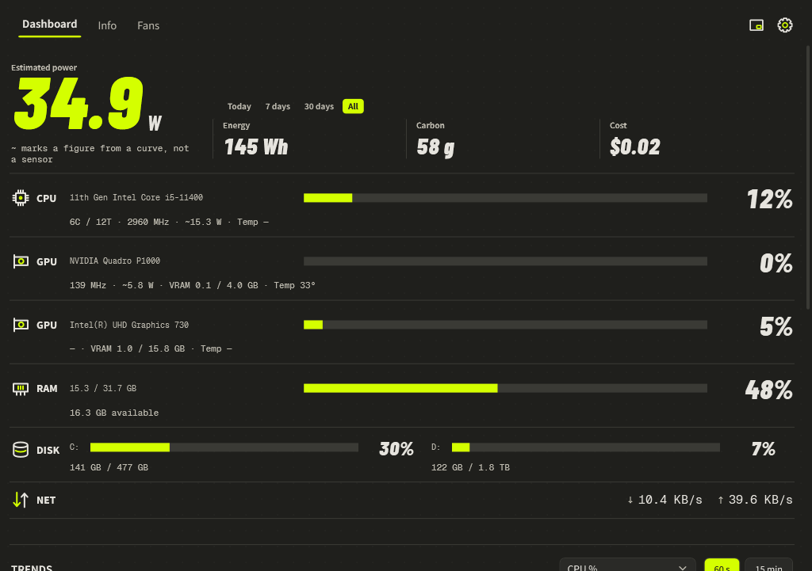
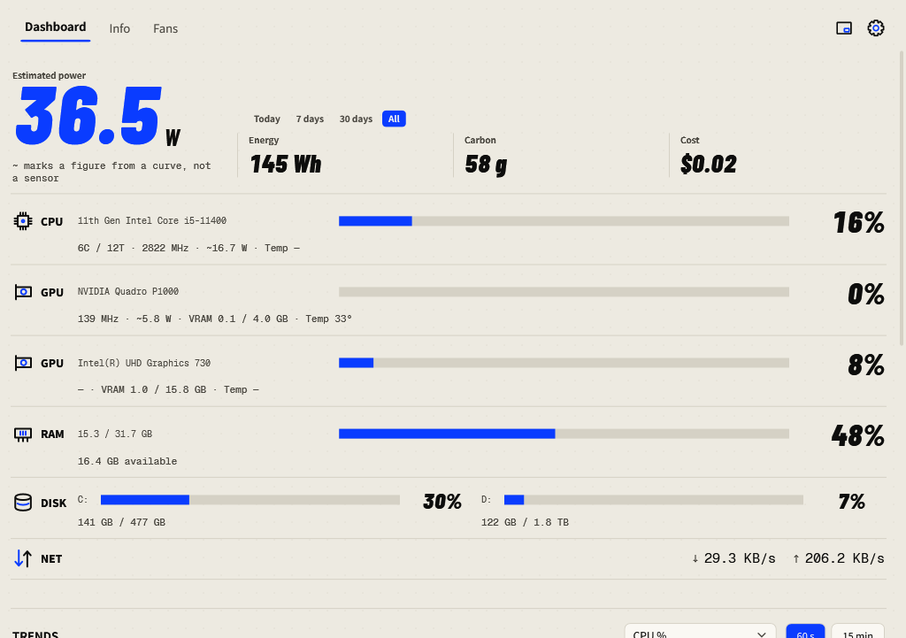
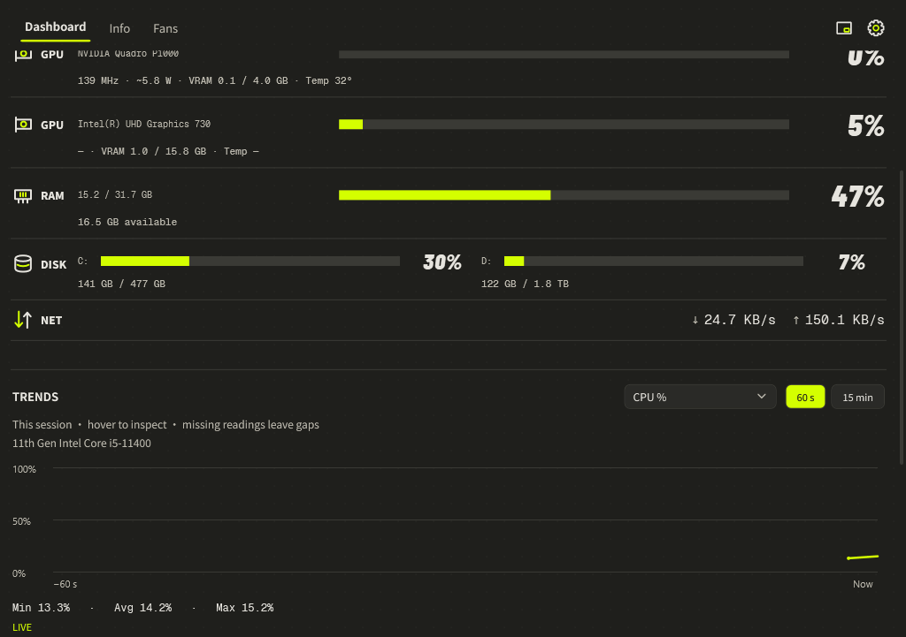
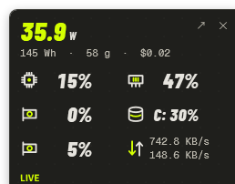
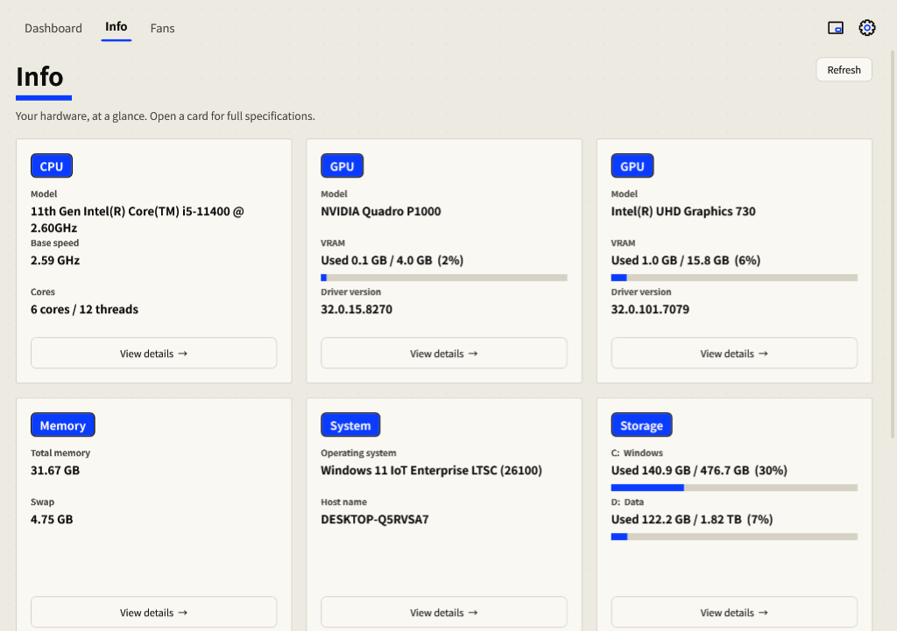
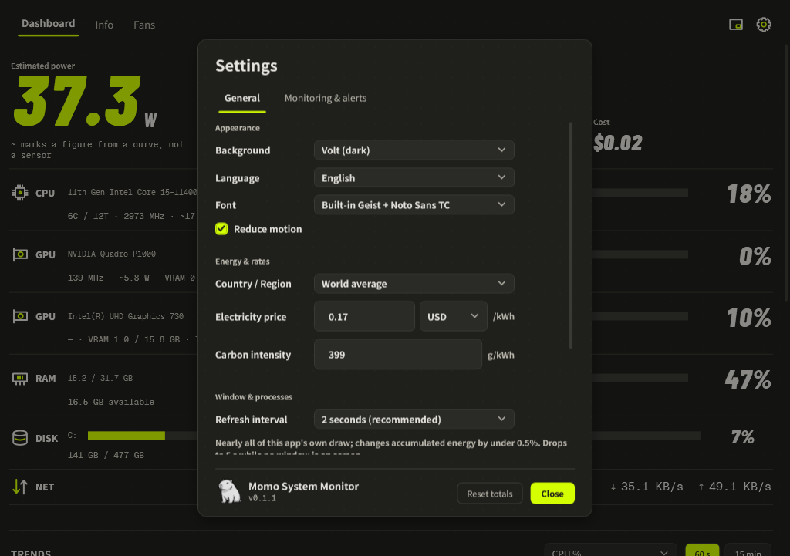

Momo System Monitor — User Guide
Windows 11 desktop widget v0.1.2 — live CPU / GPU / RAM / network / storage, fans, wattage, energy & carbon footprint · 2026-09-14
Momo System Monitor is a little Windows 11 widget that keeps an eye on your whole machine every second: CPU / GPU / RAM / network / storage, motherboard fans & AIO pumps, wattage, cumulative energy, carbon footprint, electricity cost, and per-process power.
One rule for the whole UI: color only means "this reading is over budget." Everything else is the same accent color, because the bars share one baseline — length alone tells the story.

Install & run
Requirements
- Windows 11 (x64)
- .NET 8 Desktop Runtime (the exe is framework-dependent)
- Administrator rights for full sensor access (UAC prompt on launch)
Optional but recommended — the PawnIO driver unlocks CPU temperature, fans and board voltages. Install once (admin):
winget install namazso.PawnIO -e
Without admin rights (or PawnIO), temperature / fan / CPU-watt readings show —; everything else works normally.
Run
Quick start
- Dashboard — the hero number is current estimated wattage; below it, cumulative energy / carbon footprint / cost. CPU, GPU, RAM, DISK and NET rows share one baseline bar list.
- Info — full hardware & system details (WMI). Fixed drives share one card, one row per disk, with a copyable spec sheet.
- Settings (gear) — language, country (applies electricity price, currency & carbon intensity at once), alert thresholds, display options.
Dashboard
Rows
- CPU — usage, package watts (RAPL when available, otherwise the TDP curve), clock, core count
- GPU — one row per card (auto-prefers discrete); temp, clocks, fan RPM, watts, load, VRAM used/total
- RAM — used / total with bar
- DISK — space used per drive (not I/O busy %); the warning condition is "free space below threshold"
- NET — up / down rates
- Fans & pumps — motherboard SuperIO fans and AIO pumps with RPM
Any bar reaching its threshold (90% by default; disk = free-space floor) turns the warning color. That's the only thing color ever means.
Top processes
Processes ranked by attributed power — CPU/GPU usage share is mapped onto total system wattage. Count is adjustable in settings.
Skins: Volt / Paper Pop
Settings → General → Background: Volt (dark, neon accent) or Paper Pop (light, cobalt accent). Same layout skeleton, only the palette changes; applies instantly to all windows and is remembered. Old 7-background configs map automatically (deep blue → Volt, the rest → Paper Pop).

Trends
60-second / 15-minute ranges for CPU/GPU load, RAM, VRAM, temperatures and estimated power. Hover for time & value; min / avg / max are labeled. History covers this launch only (last 15 minutes) — no persistence across restarts. Gaps stay empty (missing sensor, interrupted sampling) instead of being filled with 0.

Mini window
A 258 × 238 glance panel from the "Mini" toggle in the header: icons instead of labels, numbers instead of bars — power, CPU, main GPU, GPU memory, fullest disk, network. Drag it from anywhere (except the buttons and the pin checkbox); double-click anywhere to return to the main window. Position, pin and "start in mini" are remembered.

Alerts
Defaults: CPU 90 °C, main GPU 85 °C, RAM/VRAM 90 %, fixed disk under 10 % free. A condition must hold for 15 s before it fires; each anomaly notifies once, and re-alerts are rate-limited by a 300 s cooldown. Thresholds and timing are editable in Settings → Monitoring & Alerts (press "Apply"). The last 20 alerts of this launch stay in the in-app log there — useful when Windows Do-Not-Disturb suppresses tray notifications.
Readings that don't exist (no fan sensor on that GPU, no temperature on that CPU) never trigger alerts.
Info page
Hardware & system details via WMI, queried in the background at startup / tab-entry / language change / manual refresh — never rebuilt every second. Fixed drives live in one card (one row per disk: "used X / Y (Z%)" + bar, with volume labels). Open any card's detail panel for the full spec sheet; it's copyable, Esc closes.

Settings & data
Options
- Language — English / 中文
- Country — one pick applies electricity price, currency and carbon intensity (France / Germany / UK / USA / China / India / Sweden / Poland / World average / Custom); fine-tune afterwards and the country flips to Custom
- Displayed process count, reset cumulative energy
- Monitoring & Alerts — main GPU (auto = prefer discrete), hide integrated GPU, thresholds, recent-alert log
- Wall power — optional: count the PSU's losses so the hero number shows what a wall meter would read (needs the supply's rated W and 80 PLUS class, both printed on its label); off by default
- Unrecognised cards — when a GPU can't report its power limit, a box appears here to type its board power from the spec sheet, so it joins the total instead of being left out
- General — background skin, reduce motion, run-in-tray behavior

Data files
Stored in %APPDATA%\StatusMonitor\:
settings.json— all preferencestotals.json— cumulative energy (Wh), survives rebootsenergy-history.json— daily energy, ~400 days; powers "today / 7d / 30d"
Tray behavior: by default ✕ exits the app. Enable "keep running in the tray" and ✕ / minimize just hide the window — sampling and alerts continue; exit stays available in the tray context menu (and saves totals on the way out).
Portable mode
Create a momo-data folder next to MomoMonitor.exe and the three data files move there — settings and energy totals travel with the exe. Without the folder, behavior is unchanged. On the first portable launch, existing %APPDATA% data is copied in automatically (only into an empty folder, never overwriting).
Headless tools
MomoMonitor.exe --dump --out snapshot.json # one sample as JSON MomoMonitor.exe --diag --out diag.txt # list all visible sensors MomoMonitor.exe --render dash.png # render the dashboard to PNG
FAQ
Why do some readings show — ?
- No admin rights → temperature / fans / CPU watts are unavailable
- PawnIO not installed → same set, plus board voltages
- No fan sensor on that GPU (e.g. integrated) → fan RPM shows —
- Motherboard chip not covered by LibreHardwareMonitor's SuperIO drivers → motherboard fans/pumps show —
Why is wattage an estimate?
Real package watts come from RAPL/Nvidia/AMD sensors where present; components without sensors (disk, network, RAM) are estimated with linear models, and total system power is their sum. Per-process power is an attribution, not a measurement.
Is it portable / one file?
Yes — one MomoMonitor.exe (framework-dependent, needs .NET 8 Desktop Runtime on the target machine).
License
GPL-3.0. Power-estimation formulas were re-implemented from WattSeal (GPLv3).